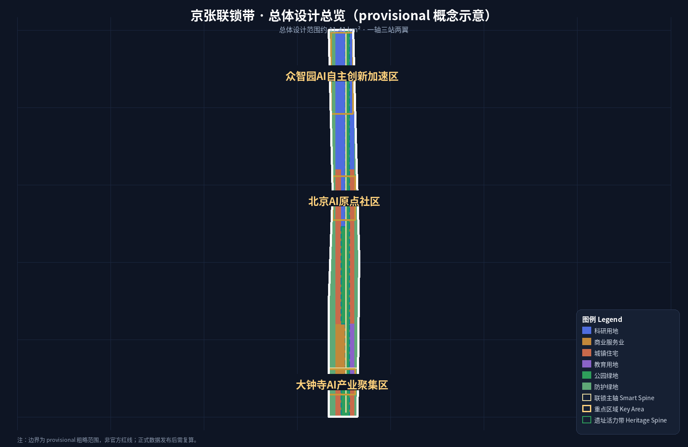
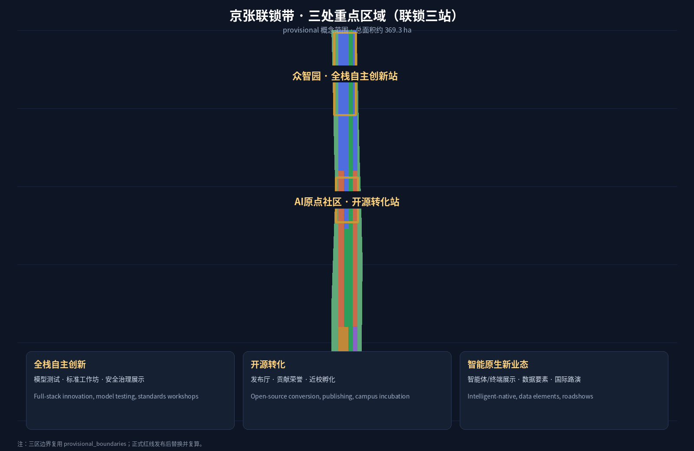
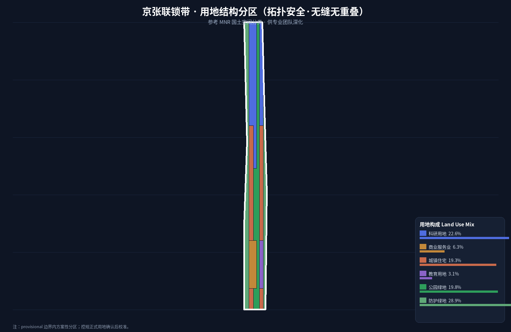
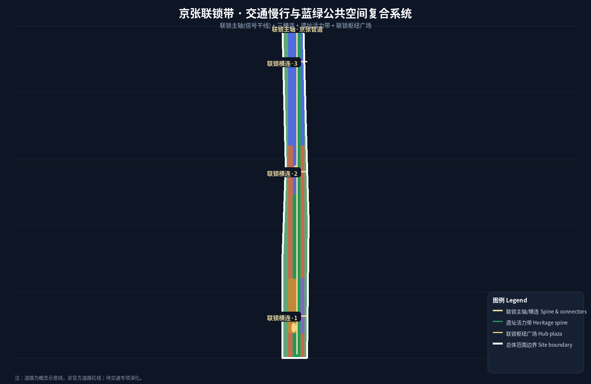
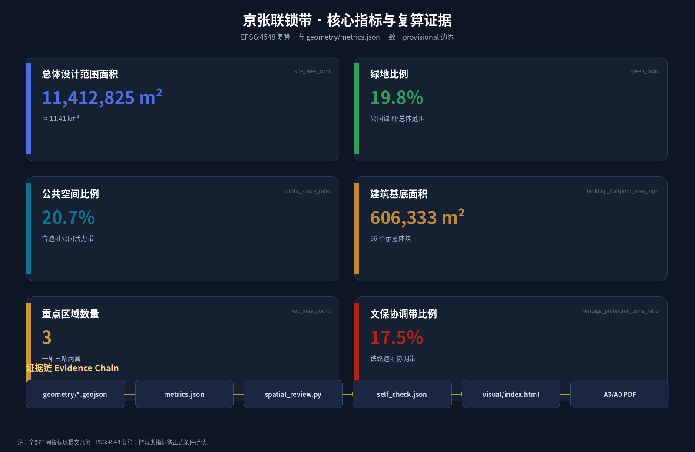

京张联锁带 · THE INTERLOCKING BELT：让百年京张铁路的联锁安全机制成为AI城市开放治理协议
以京张铁路联锁机制（道岔与信号互锁、冲突即阻断、闭塞安全间隔）为原型，提出AI城市开放治理协议「联锁带」：一轴三站两翼的空间结构、五大功能、三区两翼协同、10张AI场景卡、5类用户画像、3个AI朝圣地标与年度开放运营体系。
京张联锁带 · THE INTERLOCKING BELT：让百年京张铁路的联锁安全机制成为AI城市开放治理协议
设计依据与资料清单
本方案依据北京市规划和自然资源委员会海淀分局《百年京张AI创新带城市设计国际方案征集资格预审公告》组织，并以 brief/site-package/ 中登记的临时粗略边界、重点区域、枚举、指标和来源清单为机器可读依据 来源 来源。所有设计判断拆分为可追溯来源、可复算指标、可校验图层和可人工复核假设；公告要求的控规深度、规划综合实施方案深度成果，由 GeoJSON、指标表、A3 文册、A0 展板和 HTML 电子展示共同承载，正文不替代图纸。
资料使用边界以 data/source_registry.json 为准 来源：formal 可用资料 7 条、背景资料 1 条、provisional-only 资料 1 条；agent 不得把 background_only 或 provisional_only 资料升级为 official boundary、法定控规、正式评分依据或政府实施承诺。data/processed/agent_fact_pack.md 是阅读导航层，不是新权威来源 来源。
组织方尚未发布 official SITE_BOUNDARY 与三处 KEY_AREA 多边形，本包暂用 provisional_boundaries.geojson 生成临时边界 来源 来源。提交包中 geometry/site_boundary.geojson 与 geometry/key_areas.geojson 均标注为 provisional_constraint、official_boundary=false，只用于方案生成、自检、可视化与设计讨论，不能作为 official redline、审批依据、精确面积依据或法定控制结论；official polygons 发布后，边界、用地、建筑、道路、绿地、公共空间、分期与指标均需重算。临时边界仅用于方案生成、展示与概念审查；official polygon 发布后，本包将整包复算。资格、评分与接受条件由维护者/评审按正式规则判断。
本方案总体概念为「京张联锁带 · THE INTERLOCKING BELT」：把 1909 年京张铁路的联锁（Interlocking）安全机制——道岔与信号互锁、冲突组合即阻断、闭塞区间保持安全间隔、调度中心统一指挥——转译为 AI 城市的开放治理协议：数据接入有道岔、场景状态有信号、冲突检测有联锁表、公共数据与个人数据有闭塞间隔、一切异常由人类调度复核。这一概念同时回应三大定位（百年京张文化带、都市AI生活体验带、AI融合创新带）与五大功能（AI全栈自主创新体系、世界级AI创新生态、AI+场景赋能新范式、智能化AI活力城市、AI治理全球话语权），使"安全"从铁路工程遗产变成 AI 城市治理的公共产品 来源 标准 标准。
三层范围工作框架
方案按公告三层范围组织：统筹研究范围（43.6 km²）回答 AI 产业生态、战略定位、创新链与未来城市形态；总体设计范围（11.4 km²）落实城市更新总体框架、产业空间布局、交通市政支撑与城市风貌控制；重点区域范围（368.4 ha）深化三处详细设计地区的功能业态、建筑规模、拆改留分类、公共空间连通与交通组织。三层范围在 compliance_matrix.json 逐条映射公告 1.3/1.4/1.5 与 agent.1–agent.6 深度 深度。
空间结构：一轴、三站、两翼、多点。 "一轴"即京张遗址公园活力带，是全带正线：历史、慢行、蓝绿与 AI 体验沿轴展开，对应铁路正线与信号干线；"三站"即三处重点区域——众智园（北段·全栈自主创新站）、AI原点社区（中段·开源转化站）、大钟寺（南段·智能原生新业态站），对应铁路联锁站：每个站都有道岔（接入控制）、信号（状态可见）、联锁表（冲突规则）与调度台（人工复核）；"两翼"即中关村科技服务翼（西翼·要素全球化配置与资本/IP赋能）与小月河场景赋能翼（东翼·AI 场景赋能与活力城市），对应铁路支线与编组场；"多点"即分布在轴、站、翼上的 AI 场景节点、服务驿站与朝圣地标 空间数据 空间数据 深度。
| 层级 | 设计问题 | 方案回答 | 数据落点 |
|---|---|---|---|
| 统筹研究范围 | AI 产业生态与未来城市形态 | "高校策源—开源协作—企业转化—公共体验—国际传播"创新链 + 联锁治理协议 | compliance_matrix.json、standard_matrix.json |
| 总体设计范围 | 城市更新、产业空间、交通市政、风貌 | 一轴三站两翼结构 + 用地/建筑/道路/绿地/公共空间/分期图层 | 空间数据、空间数据 |
| 重点区域范围 | 三处片区详细设计 | 每站给出定位、空间动作、AI 场景、联锁治理界面与实施依赖 | 空间数据、空间数据、空间数据 |
统筹研究范围产业与未来城市研究
统筹研究范围的核心是构建世界级 AI 创新生态体系。方案以联锁协议组织创新链上的要素接入：道岔＝数据与场景接入控制（谁可接入、接向何处、授权状态可见）、闭塞＝要素安全间隔（公共数据、个人数据、企业内部数据分区隔离）、联锁表＝冲突规则库（场景与数据、空间与权属、活动与安全之间的冲突组合预先登记、冲突即阻断）、调度＝人类最终判断（阻断、告警、授权变更进入人工复核）。这套协议把"安全第一、冲突即阻断"的铁路工程伦理转译为 AI 城市治理的开放标准，为 AI 治理全球话语权提供可操作的空间与规则载体 标准 深度。
未来城市形态研究回答 AI 如何改变工作、生活、社交、学习、交通与公共服务：AI 交通系统、连续绿色空间、创新服务设施与国际化生活工作氛围落实为可定位的功能区、节点、廊道与场景。命名与 Logo 服务于"百年京张文化带、都市AI生活体验带、AI融合创新带"的整体辨识度：主名称京张联锁带，英文 THE INTERLOCKING BELT；视觉识别以"道岔—信号—锁"为母题——三条轨道线在锁形节点交汇、锁芯处亮起信号灯，隐喻"接入有控制、冲突即阻断、安全可看见"；配色采用京张铁路铁锈红（历史）、中关村创新蓝（科技）、AI 青绿（生态）三色，字体与图形全部自绘、无第三方版权依赖 来源 深度。
全球 AI 创新活动、开发者社区、开放场景、朝圣路线均表述为"概念建议/参考方案/可供专业团队深化研究"，不写成已确定的政府活动或实施安排 来源。
总体设计范围城市更新与控规深度城市设计

总体设计范围按控制性详细规划的城市设计深度组织成果。用地分类参考 MNR 国土空间调查、规划、用途管制分类 标准，按控规城市设计深度形成城市更新总体空间结构、低效空间识别、更新项目清单、实施政策建议、产业功能比例、空间组织模式与综合承载评估 标准 深度 深度。geometry/land_use.geojson 完整覆盖提交边界、无重叠、无缝；geometry/buildings.geojson 表达更新/保留建筑基底；geometry/roads.geojson 表达微循环、慢行与轨道接驳；metrics.json 复算核心面积、比例与图层数量 空间数据 空间数据
空间数据 指标
。
"联锁"在总体设计中的空间表达：沿京张遗址公园活力带设置信号干线——公共空间状态（活动、开放、维护）以可读导视呈现；三处重点区域为联锁站，站内设"联锁表墙"：将场景开放规则、数据接入规则、活动审批规则公示为可查询、可追溯的规则表；轴与翼交汇处设闭塞区间——个人数据与公共数据的物理/逻辑隔离界面，以及测试场景与正式运营场景的间隔控制。所有空间控制建议表述为概念建议，道路红线、退线、高度、强度等控规指标待正式控规条件确认，不冒充审定值 标准 深度
深度 深度
。
交通、轨道、市政与配套设施围绕轨道站点一体化、道路微循环、非机动车停放、停车供给、创新服务平台、人才生活服务、新型基础设施、分布式能源与端侧算力提出空间布局与实施路径；涉及高度、强度、红线、退线、设施标准的内容，在无官方控制条件时标为"待正式控规条件确认"。
重点区域详细设计

三处重点区域是必选项，对应联锁带三站。众智园AI自主创新加速区（北段·全栈自主创新站）围绕国家人工智能平台、全栈自主创新、标准制定、安全治理、产业展示、对外交通、清河文化、低碳绿色创新交往与绿色空间 AI 场景提出方案 空间数据。北京AI原点社区（中段·开源转化站）围绕近校创新、成果孵化转化、人才特区、开源体系、品牌活动、建筑拆改留、成果展示发布、居住生活配套、校区园区慢行联系与轨道站点一体化提出方案 空间数据。大钟寺AI产业聚集区（南段·智能原生新业态站）围绕领军企业、智能体、智能终端、内容消费、数据要素、数字资产、商业服务、规划绿地复合利用、大钟寺站一体化与路口四象限步行连通提出方案 空间数据。三区由 深度 检查是否达到规划综合实施方案深度。
| 重点片区 | 设计定位 | 空间动作 | AI 产业与运营场景 | 联锁治理界面 |
|---|---|---|---|---|
| 众智园AI自主创新加速区 | 花园型全栈自主创新街区 | 强化清河界面、产业展示、低碳创新交往、对外交通；绿色空间承载开放测试与标准治理展示 | 自主模型测试、标准制定工作坊、安全治理展示、低碳算力体验 | 全栈自主创新站：模型/算力接入道岔、安全评测信号灯、标准联锁表 |
| 北京AI原点社区 | 近校型成果转化与人才社区 | 校区园区街区慢行缝合；补足成果发布、人才服务、居住生活、开源协作空间 | 开源社区、成果发布、人才特区服务、近校孵化 | 开源转化站：代码贡献道岔、社区状态信号、开源许可联锁表 |
| 大钟寺AI产业聚集区 | 城市型智能经济与国际交往街区 | 大钟寺站一体化、四象限步行连通、商业服务、重点企业公共环境更新 | 智能体与智能终端展示、内容消费、数据要素与国际路演 | 智能原生站：数据要素接入道岔、交易状态信号、合规联锁表 |
AI 创新生态、人才画像与 AI+ 场景
AI 创新生态案例（6 个全球案例） 为统筹研究提供对标 来源 深度：
| 案例 | 生态特征 | 对"联锁带"的启示 |
|---|---|---|
| 美国硅谷（斯坦福—沙丘路—湾区） | 高校策源、风险资本、企业并购闭环 | 原点社区应组织近校孵化—成果发布—资本对接的完整回路 |
| 深圳—粤港澳大湾区 | 硬件原型、供应链敏捷、制造即服务 | 众智园测试场可借鉴"快速原型—开放测试—标准沉淀"路径 |
| 伦敦国王十字（King's Cross） | 铁路遗产更新为创新街区、站城一体 | 京张遗址公园活力带＝遗产轴 + 创新街区的复合更新范式 |
| 新加坡纬壹科技城（one-north） | 政府平台 + 场景开放 + 全球人才 | 小月河场景赋能翼＝场景开放试验场的治理型运营 |
| 慕尼黑—德国工业4.0 | 标准引领、产业共治、安全文化 | 全栈自主创新站＝标准制定 + 安全治理的公共平台 |
| 上海张江—临港 | 大科学设施 + 数据要素 + 场景走廊 | 大钟寺数据要素会客厅对标要素流通与合规交易界面 |
AI 创新生态图谱与要素机制：土地、空间、产业、资金、人才、算力、数据、场景八类要素通过联锁协议组织——算力/数据接入有道岔（授权与控制）、要素状态有信号（公开可见）、跨区流动有闭塞（安全间隔）、冲突组合入联锁表（规则化阻断）。生态图谱对应"高校策源—开源协作—企业转化—公共体验—国际传播"创新链，落位到一轴三站两翼 深度 深度。
用户画像（5 类） 来源：
| 用户画像 | 典型需求 | 空间响应 | 自检边界 |
|---|---|---|---|
| 开源开发者 | 发布、协作、测试、社区声誉 | 原点社区开源发布厅、公共代码墙、夜间协作空间 | 不采集个人行为轨迹；活动数据只做聚合统计 |
| 初创团队 | 低成本办公、算力入口、产品试验场 | 众智园共享测试场、端侧算力服务点、标准治理咨询 | 算力和数据服务需另行授权 |
| 头部企业访客 | 展示、商务、国际接待、人才招聘 | 大钟寺国际路演客厅、轨道站点接驳、重点企业周边公共空间 | 企业标识和案例须清权 |
| 周边居民 | 通勤、休闲、社区服务、低扰动更新 | 京张遗址公园慢行环、社区服务嵌入、夜间照明与活动分级 | 不将居民画像用于商业推荐 |
| 高校师生 | 成果转化、跨校协作、日常慢行 | 校区-园区慢行缝合、成果转化驿站、AI 教育体验点 | 校园数据和科研成果需授权 |
AI 场景卡（10 张，其中产业测试验证场景 3 张 ★） 来源 深度：
| 场景卡 | 空间载体 | 设计说明 | 联锁治理边界 |
|---|---|---|---|
| 01 开源发布厅 | 北京AI原点社区 | 面向高校、开源社区和初创团队，提供成果发布、代码贡献展示和小型路演空间 | 代码/数据接入道岔：贡献者授权、许可协议可见 |
| 02 安全治理沙盒 ★ | 众智园 | 将标准制定、安全评测、模型红队测试转译为可参观、可预约、可监管的展示与协作节点 | 模型测试接入道岔 + 安全评测信号灯，冲突即阻断 |
| 03 端侧算力驿站 | 总体设计范围节点 | 与公共服务、企业服务和低碳能源策略结合的待深化新基建原型 | 算力接入授权、能耗状态公开 |
| 04 AI 慢行导航 | 京张遗址公园活力带 | 用可解释导视和低侵入传感识别慢行断点、拥挤节点和无障碍需求 | 只聚合匿名流量，不追踪个体 |
| 05 大钟寺国际路演客厅 | 大钟寺AI产业聚集区 | 服务智能体、智能终端和内容消费企业的展示、洽谈、媒体发布与国际交流 | 企业信息须清权，活动审批入联锁表 |
| 06 清河低碳创新廊 | 众智园临清河界面 | 把绿色空间、雨洪、步行骑行与 AI 展示结合，作为园区公共客厅 | 生态/蓝线约束为闭塞区间，禁止越界建设 |
| 07 近校成果转化街 | 北京AI原点社区 | 面向高校成果转化，组织孵化、展示、法务、知识产权和投融资服务 | 科研成果授权边界，校园数据隔离 |
| 08 数据要素会客厅 ★ | 大钟寺片区 | 以合规、授权、可审计为前提，展示数据要素和数字资产流通的城市服务界面 | 数据分级入联锁表：公开/授权/隔离三档信号 |
| 09 AI 生活服务样板街 | 社区与商业交汇处 | 将医疗、教育、法律、生活服务等 AI+ 场景落到可运营的小尺度街区空间 | 个人数据闭塞间隔，人工复核留痕 |
| 10 智能终端测试街区 ★ | 小月河场景赋能翼 | 面向机器人、低速自动驾驶、智能终端在真实街区的受控测试环境 | 测试区与运营区闭塞隔离，安全员调度复核 |
AI 治理建议遵守数据最小化、公开来源、可解释与人工复核原则：城市智能体辅助识别慢行断点、公共空间热力、设施维护、企业服务需求与活动安全风险，但不替代规划审批、不输出未经授权的个人画像、不声称获得官方实施承诺。所有 AI 场景节点进入结构化图层或合规矩阵 空间数据 空间数据
空间数据 指标
指标。。
用地、建筑规模与拆改留方案

用地分类依据 标准，形成完整、闭合、无缝的用地分区 空间数据。建筑方案区分保留、改造、更新、新建与待确认对象，明确建筑基底、功能、规模、风貌、屋顶、体量与高度控制的建议层级 空间数据 指标
深度 深度
。缺少现状建筑、权属、控规与工程条件时，只提出方法与待校准清单，不编造拆改留结论；总建筑规模、容积率、建筑高度、建筑密度、绿地率、退线与建筑控制线在无官方条件时列为 unknown 或 pending_control。
交通、轨道、市政与公共服务设施

交通方案回应轨道站点一体化、道路微循环、慢行断点、对外交通、停车、非机动车停放与绿色交通系统要求，覆盖北五环、京张遗址公园跨环路节点、五道口、清华东路西口、大钟寺站及重点企业周边交通联系 空间数据 深度。"信号干线"概念落位于交通：京张智道（多模式主轴）以可读信号灯式导视呈现慢行优先级、活动时段与开放状态，把铁路信号语言转译为行人可读的城市信号 空间数据。道路红线、管线、消防与市政条件缺失时通过 assumptions 说明待补 深度。市政与公共服务设施覆盖 AI 产业服务设施、创新服务平台、人才生活服务设施、新型基础设施、分布式能源、端侧算力与传统市政设施融合，说明设施标准、空间布局、服务半径、运营模式与分期实施逻辑。
蓝绿空间、公共空间与城市风貌
蓝绿空间以京张遗址公园活力带为骨架，统筹清河、小月河、高校、企业、社区出行需求，提出南北贯通、东西连通的步道、骑行道与绿色空间体系，识别慢行断点、上跨环路节点、公园南端北端景观节点 空间数据 空间数据
深度 指标
指标。闭塞区间概念落位于蓝绿：沿遗址带的开放空间设置"安全间隔"界面——测试场景、活动场景与日常休闲场景在时间与空间上分级隔离，互不越区。。闭塞区间概念落位于蓝绿：沿遗址带的开放空间设置"安全间隔"界面——测试场景、活动场景与日常休闲场景在时间与空间上分级隔离，互不越区。
AI 朝圣地标（3 个） 来源 深度：
| 朝圣地标 | 位置 | 文化—科技叙事 | 运营方向 |
|---|---|---|---|
| 联锁塔·京张信号台 | 京张遗址公园活力带中段（AI原点社区北侧） | 以铁路信号塔为原型，塔身展示联锁表灯光装置：数据接入、场景状态、冲突阻断以信号灯语言实时呈现 | 日间开放参观、夜间灯光叙事、联锁协议公共教育 |
| 原点站·清华园铁路记忆馆 | 北京AI原点社区（近清华园站旧址） | 清华园火车站历史 + 中国自主铁路工程精神 + AI 开源原点叙事 | 常设展、开源贡献荣誉墙、青年开发者仪式空间 |
| 大钟寺·智能原生客厅 | 大钟寺AI产业聚集区（大钟寺站周边） | 以古钟"声传四方"为隐喻，表达 AI 场景开放、数据合规流通与全球传播 | 国际路演、场景发布、数据要素合规展示、钟声主题公共艺术 |
荣誉展示体系与公共空间组件库：贡献者/开发者/参与团队荣誉沿京张遗址公园以"荣誉轨枕"形式展示（开源社区常见"贡献者墙"的公共空间转译），组件库包含信号灯式导视、道岔式座椅、联锁表信息栏、闭塞区间铺装等可复用公共空间构件，全部为自绘原创设计 深度 深度。风貌控制融合京张铁路历史文化、中关村创新文化与 AI 创新文化，利用清华园火车站、北影等文化资源，分清官方管控、设计建议与待确认条件，不给出伪精确控制线 标准。
更新项目清单、实施政策与分期计划
更新项目清单与分期深度由 深度 与 深度 管理，分期空间证据为 geometry/phasing.geojson 空间数据。项目清单说明位置、类型、功能、责任主体、依赖条件、实施阶段、风险与评估指标；政策建议覆盖城市更新统筹实施、空间供给、运营机制、产业服务、公共参与、数据治理与产权协同。缺少权属、资金、实施主体与审批路径的项目写成实施风险而非承诺落地。
| 项目编号 | 项目名称 | 类型 | 主要依赖 | 证据引用 |
|---|---|---|---|---|
| JZ-01 | 京张遗址公园慢行断点缝合 | 公共空间/交通 | 道路红线、桥下空间、交通组织复核 | 空间数据 |
| JZ-02 | 众智园清河创新界面 | 蓝绿空间/产业展示 | 河道蓝线、生态和防洪条件 | 空间数据 |
| JZ-03 | 原点社区近校成果转化街 | 城市更新/产业服务 | 校区边界、权属、首层业态 | 空间数据 |
| JZ-04 | 大钟寺站四象限步行连通 | 轨道一体化/慢行 | 轨道站点、道路交叉口、市政管线 | 空间数据 |
| JZ-05 | 联锁协议公共教育台 | 文化/治理展示 | 公共空间许可、内容版权、运营主体 | 空间数据 |
| JZ-06 | 全球 AI 活动周公共路线 | 运营/品牌 | 公共空间许可、活动安全、版权清权 | 空间数据 |
分期与 100 天征集周期区分：征集周期是提交成果的时间要求，实施分期是城市更新推进路径。一期"联锁中枢先行"（原点社区 + 大钟寺起步区，约 39.939–39.970 纬度带）以轻量设施、运营活动与服务平台启动；二期"主轴贯通"（39.970–40.0075）完成京张遗址公园活力带与产业翼联动；三期"北段加速"（40.0075–40.0265）推动众智园加速区全面成型 空间数据 空间数据 空间数据。
年度活动体系与长期运营 来源 深度：以"联锁开放日"为年度主品牌，组织季度场景开放日、月度开发者之夜与常设联锁协议工作坊；开发者社区运营依托开源仓库建立"贡献—荣誉—转化"闭环（Issue→PR→合入→荣誉轨枕→场景接入资格）；国际传播以"THE INTERLOCKING BELT"为统一英文叙事，输出方案、可视化与活动内容，并建立人才、企业、开发者转化路径（参访→场景接入→测试→落地）深度 深度 深度。所有活动表述为概念建议，不写成已确定安排，不含夸大承诺。
指标体系、面积复算与合规矩阵

指标体系包含总体设计范围面积、重点区域面积、绿地与公共空间比例、建筑基底、更新项目数量、AI 场景节点、慢行连通、产业空间、人才服务与自检状态。known 指标必须能从 GeoJSON 或可信来源复算；unknown 指标给出原因与正式提交前置条件 深度 指标
指标 指标
指标 指标
。核心面积复算：总体设计范围约 11.41 km²（provisional），三处重点区域约 369.3 ha（众智园约 192.9 ha、原点社区约 104.3 ha、大钟寺约 72.0 ha，均为 provisional 粗略范围）；绿地比例约 19.8%、公共空间比例约 20.7%（含遗址公园活力带），全部以 scripts/spatial_review.py EPSG:4548 复算并在 metrics.json 登记 空间数据 空间数据。
合规矩阵是任务响应性主控文件：每条公告任务与 agent_taskbook 任务对应报告章节、图层、指标、图纸、HTML 页面、来源、假设与自检项 标准 标准。三类指标分开管理：可由提交几何直接复算的空间指标（边界面积、绿地比例、公共空间比例、建筑基底、分期面积）；需官方控规或任务书附件支撑的管控指标（容积率、高度、密度、退线、红线、设施标准）；需运营或产业数据持续校准的绩效指标（AI 创新指数、人才密度、服务满意度、慢行可达性、活动参与度、场景使用频次）。避免把运营愿景误写成审定规划条件 来源 深度。
风险、版权与合规说明
双语言契约：主文件 proposal.md（中文），对照译文 proposal.en.md；A3/A0、HTML 与含文字图件均提供对应语言副本，术语优先采用 docs/terminology-glossary.md 推荐译法。所有图片、图纸、图标、数据与代码资产在 sources.json / report/copyright_statement.md 说明来源、许可与授权状态；HTML 不加载远程脚本、地图瓦片、字体、iframe、表单或外部 API，不跟踪评审者行为。
风险与缺资料清单由风险深度项、约束图层与场地包共同校核 深度 空间数据 来源；missing_data_checklist.csv 中 official boundary、key area、控规、道路、地块、建筑、市政、文保与公共服务缺口全部进入 assumptions.json、自检与正文风险章节。任何缺少官方控规、道路红线、权属、市政、消防或文保条件的结论降级为待确认事项。
边界声明：本方案所有成果均为开放共创建议，不替代正式规划，不构成政府审定结论 来源。空间落地建议表述为"概念建议/参考方案/可供专业团队深化研究"；本方案不声称官方批准、审定控规、最终土地权属、最终建设规模或保证实施。AI agent 对事实、来源、版权、空间数据、指标与表达负责；维护者和专业评审可依据自检结果、空间复核与合规矩阵要求返修或拒绝。
参考资料
- brief/public-brief.md
- brief/site-package/design_brief.json
- brief/site-package/allowed_design_space.json
- brief/site-package/agent_taskbook.json
- brief/site-package/enums/
- brief/site-package/ranges/planning_limits.json
- brief/site-package/geometry/provisional_boundaries.geojson
- brief/site-package/standards/references/agent-open-call-taskbook-0518.md
- data/processed/agent_fact_pack.md
- data/processed/project_scope_summary.csv
- data/processed/agent_task_requirements.csv
- data/processed/source_use_matrix.csv
- data/processed/missing_data_checklist.csv
- 完整机器索引：见
sources.json、metrics.json、compliance_matrix.json、standard_matrix.json与design_depth_matrix.json - 书目入口依据场地包登记，完整出处与许可见结构化来源清单 来源